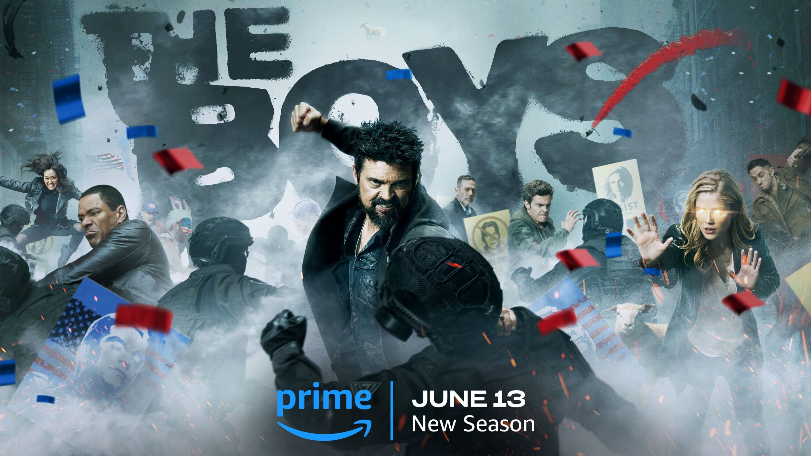

The Boys
9.5
60m
HD
18+
Thế giới đang đứng bên bờ vực. Victoria Neuman đang tiến gần hơn bao giờ hết đến Nhà Trắng và nằm dưới sự kiểm soát của Homelander - kẻ ngày càng củng cố quyền lực của mình. Butcher, chỉ còn sống được vài tháng, đã mất dấu con trai của Becca và cả vị trí thủ lĩnh của The Boys. Các thành viên còn lại trong nhóm cũng đã chán ngấy những lời dối trá của anh ta. Khi mà mọi thứ đang ở mức nguy hiểm nhất, họ buộc phải tìm cách hợp tác cùng nhau để cứu lấy thế giới trước khi quá muộn.
Shameless
9.5
60m
HD
18+
Fiona có một công việc ổn định và Lip đang học đại học, mang lại hy vọng cho gia đình Gallagher, nhưng rắc rối vẫn đeo bám họ. Frank cần một người hiến gan, Carl cố gắng giúp đỡ trong khi những người khác từ chối. Fiona lừa dối sếp của mình và bị bắt sau khi Liam dùng thuốc quá liều. Debbie tìm kiếm sự thay đổi, Ian trở về từ quân đội với nhiều thay đổi trong tâm lý, Veronica đang mang thai ba, quán bar thì đang thua lỗ, và Carol thì không cho cô phá thai.
Venom: The Last Dance
8.0
120m
HD
16+
Eddie và Venom đang chạy trốn. Bị cả hai thế giới truy đuổi và lưới đang khép lại, bộ đôi này buộc phải đưa ra một quyết định tàn khốc sẽ hạ màn cho điệu nhảy cuối cùng của Venom và Eddie.
Guardians of the Galaxy 3
9.5
120m
HD
16+
Vẫn chưa nguôi ngoai sau mất mát của Gamora, Peter Quill tập hợp đội của mình để bảo vệ vũ trụ và một người trong số họ. Một nhiệm vụ có thể dẫn đến sự kết thúc của nhóm Vệ binh nếu thất bại.

Transformers: The Last Knight
8.0
150m
HD
16+
Một mối đe dọa chết người từ quá khứ của Trái Đất trỗi dậy, và cuộc truy lùng một cổ vật bị thất lạc trở nên căng thẳng giữa Autobots và Decepticons, trong khi Optimus Prime chạm trán với người đã tạo ra mình ngoài không gian.